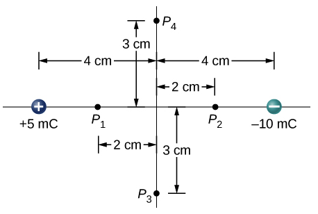

D2.3 Problems#
Problem D2.1
Consider a charge \(q_1 = +5.0~\mu\)C fixed at a site with another charge \(q_2 = +3.0~\mu\)C, mass of \(6.0~\mu\)g, moving in the neighboring space.
Evaluate the potential energy of \(q_2\) when it is 4.0 cm from \(q_1\).
If \(q_2\) starts from rest from a point 4.0 cm from \(q_1\), what will be its speed when it is 8.0 cm from \(q_1\) assuming \(q_1\) is fixed in its place.?
This problem is a slightly modified version from OpenStax. Access for free here
Show code cell source
%reset -f
import sympy as sym
q1 = 5.0E-6
q2 = 3.0E-6
m = 6.0E-9
r1 = 4.0E-2
k = 8.99E9
# Part 1
# ------
# easy solution: the actualy value of potential energy has no meaning and we are free to set our zero level
print('Easy solution: the potential energy at that location is 0 J.')
# more conventional but less smart...use du = kq1q2/r...this assumes that u = 0 at r = infinity
du = k*q1*q2/r1
print('The potential energy at that location is '+str(du)+' J.')
# Part 2
# ------
r2 = 8.0E-2
v1 = 0.0
v2 = sym.Symbol('v2')
k1 = 0.0
k2 = 0.5*m*v2**2
du = (k*q1*q2*(1/r2 - 1/r1))
eq = (k2 - k1) + du # -du = +dk
sol = sym.solve(eq,v2)
v2 = sol[1] #positive root
print('The speed of the charge is '+str(v2)+' m/s.')
Show code cell output
Easy solution: the potential energy at that location is 0 J.
The potential energy at that location is 3.3712500000000007 J.
The speed of the charge is 23703.9026322671 m/s.
Problem D2.2
An evacuated tube uses an accelerating voltage of \(40.0\) kV to accelerate electrons to hit a copper plate and produce X-rays. Non-relativistically, what would be the maximum speed of these electrons?
This problem is a slightly modified version from OpenStax. Access for free here
Show code cell source
%reset -f
import sympy as sym
dv = 40.0E3
q = -1.602E-19
m = 9.109E-31
#max speed happens if ALL the potential energy is converted into kinetic energy: -du = +dk
# assuming they start from rest: -du = 0.5mv^2
v = sym.Symbol('v')
eq = 0.5*m*v**2 + q*dv
sol = sym.solve(eq,v)
v = sol[1] #pick positive root
print('Maximum speed is '+str(v)+' m/s.')
Show code cell output
Maximum speed is 118615351.000741 m/s.
Problem D2.3
What is the strength of the electric field between two parallel conducting plates separated by \(1.00\) cm and having a potential difference (voltage) between them of \(1.50\times 10^4\) V?
This problem is a slightly modified version from OpenStax. Access for free here
Show code cell source
%reset -f
import numpy as np
dx = 1.00E-2
dv = 1.50E4
#just looking for magnitude
Ex = -dv/dx
E = np.abs(Ex)
print('Magnitude of electric field '+str(E)+' V/m.')
Show code cell output
Magnitude of electric field 1500000.0 V/m.
Problem D2.4
Two parallel conducting plates are separated by \(10.0\) cm, and one of them is taken to be at zero volts.
What is the electric field strength between them, if the potential \(8.00\) cm from the zero volt plate (and \(2.00\) cm from the other) is \(450\) V?
What is the voltage between the plates?
This problem is a slightly modified version from OpenStax. Access for free here
Show code cell source
%reset -f
import numpy as np
dx = 10.0E-2
v0 = 0.0
# Part 1
# ------
dx1 = 8.00E-2
v1 = 450
Ex = -(v1 - v0)/dx1
E = np.abs(Ex)
print('The magnitude of the electric field is '+str(E)+' V/m.')
# Part 2
# ------
dv = -Ex*dx
dv = np.abs(dv)
print('The voltage between the plates is '+str(dv)+' V.')
Show code cell output
The magnitude of the electric field is 5625.0 V/m.
The voltage between the plates is 562.5 V.
Problem D2.5
How far from a \(1.00~\mu\)C point charge is the potential \(100.0\) V?
At what distance is it \(2.00\times 10^2\) V?
This problem is a slightly modified version from OpenStax. Access for free here
Show code cell source
%reset -f
import sympy as sym
# this problem will assume a reference level of 0 infinitely far away.
# Then we can use: v = kq/r
q = 1.00E-6
v1 = 100.0
k = 8.99E9
#Part 1
r1 = sym.Symbol('r1')
eq1 = v1 - k*q/r1
sol1 = sym.solve(eq1,r1)
r1 = sol1[0]
print('The distance is '+str(r1)+' m.')
#Part 2
v2 = 2.00E2
r2 = sym.Symbol('r2')
eq2 = v2 - k*q/r2
sol2 = sym.solve(eq2,r2)
r2 = sol2[0]
print('The distance is '+str(r2)+' m.')
Show code cell output
The distance is 89.9000000000000 m.
The distance is 44.9500000000000 m.
Problem D2.6
Find the potential at points \(P_1\), \(P_2\), \(P_3\), and \(P_4\) in the diagram due to the two given charges.
This problem is a slightly modified version from OpenStax. Access for free here
Show code cell source
%reset -f
import numpy as np
qA = 5.0E-3
qB = -10.0E-3
k = 8.99E9
# the following assumes 0 V infinitely away from a given charge. Then we can use v = kq/r
def potential(r1,r2):
r1 = np.sqrt(r1[0]**2 + r1[1]**2)
r2 = np.sqrt(r2[0]**2 + r2[1]**2)
v = k*qA/r1 + k*qB/r2
return print('The electric potential at the given point is '+str(v)+' V.')
# P1
rA1 = np.array([2.0E-2, 0.0E-2])
rB1 = np.array([6.0E-2, 0.0E-2])
potential(rA1,rB1)
# P2
rA2 = np.array([6.0E-2, 0.0E-2])
rB2 = np.array([2.0E-2, 0.0E-2])
potential(rA2,rB2)
# P3
rA3 = np.array([4.0E-2, -3.0E-2])
rB3 = np.array([4.0E-2, -3.0E-2])
potential(rA3,rB3)
# P4
rA4 = np.array([4.0E-2, 3.0E-2])
rB4 = np.array([4.0E-2, 3.0E-2])
potential(rA4,rB4)
Show code cell output
The electric potential at the given point is 749166666.6666665 V.
The electric potential at the given point is -3745833333.333333 V.
The electric potential at the given point is -899000000.0 V.
The electric potential at the given point is -899000000.0 V.
Problem D2.7
An electron enters a region between two large parallel plates made of aluminum separated by a distance of \(2.0\) cm and kept at a potential difference of \(200.0\) V. The electron enters through a small hole in the negative plate and moves toward the positive plate. At the time the electron is near the negative plate, its speed is \(4.0\times10^5\) m/s. Assume the electric field between the plates to be uniform, and find the speed of electron at (from the negative plate)
0.10 cm
0.50 cm
1.0 cm
1.5 cm
immediately before it hits the positive plate.
This problem is a slightly modified version from OpenStax. Access for free here
Show code cell source
%reset -f
import sympy as sym
D = 2.0E-2
dV = 200.0
v0 = 4.0E5
q = -1.602E-19
m = 9.109E-31
v = sym.Symbol('v')
# let x be positive in direction of motiuon.
# change in potential energy is du = qdv.
# Let 0 V be at the negative plate. dv at any given distance dx from negative plate is dv = -E*dx.
# Use -dV/D = E to find electric field, then we can find dv anywhere between the plates.
# Use conservation of energy to find speed: -du = +dk.
def speed(dx):
E = -dV/D #find the electric field
du = -q*E*dx #find the change in electric potential energy
eq = 0.5*m*v**2 + du
sol = sym.solve(eq,v)
return print('The speed of the electron is '+str(sol[1])+' m/s.')
d1 = 0.10E-2
speed(d1)
d2 = 0.50E-2
speed(d2)
d3 = 1.0E-2
speed(d3)
d4 = 1.50E-2
speed(d4)
d5 = D
speed(d5)
Show code cell output
The speed of the electron is 1875473.37311336 m/s.
The speed of the electron is 4193685.95227231 m/s.
The speed of the electron is 5930767.55003703 m/s.
The speed of the electron is 7263677.14032351 m/s.
The speed of the electron is 8387371.90454462 m/s.
Problem D2.8
A lightning bolt strikes a tree, moving \(20.0\) C of charge through a potential difference of \(1.00\times 10^2\) MV.
What energy was dissipated?
What mass of water could be raised from \(15~^\circ\)C to the boiling point and then boiled by this energy?
Discuss the damage that could be caused to the tree by the expansion of the boiling steam.
This problem is a slightly modified version from OpenStax. Access for free here
Show code cell source
%reset -f
import sympy as sym
Q = 20.0
dV = 1.00E8
# Part 1
dU = Q*dV
print('Energy dissipated is '+str(dU)+' J.')
# Part 2
# specific heat: mcdT
# latent heat of vaporization: mL
c = 4186
L = 2.27E6
dT = (100 - 15)
m = sym.Symbol('m')
eq = dU - m*c*dT - m*L
sol = sym.solve(eq,m)
m = sol[0]
print('Mass that can be brought to boiling point and evaporated is '+str(m)+' kg.')
Show code cell output
Energy dissipated is 2000000000.0 J.
Mass that can be brought to boiling point and evaporated is 761.669732387340 kg.
Problem D2.9
What are the sign and magnitude of a point charge that produces a potential of –2.00 V at a distance of 1.00 mm?
This problem is a slightly modified version from OpenStax. Access for free here
Show code cell source
%reset -f
import sympy as sym
#assume 0 V infinitely far away so we can use v = kq/r
v = -2.00
r = 1.00E-3
k = 8.99E9
q = sym.Symbol('q')
eq = v - k*q/r
sol = sym.solve(eq,q)
print('The charge is '+str(sol[0])+' C.')
Show code cell output
The charge is -2.22469410456062e-13 C.